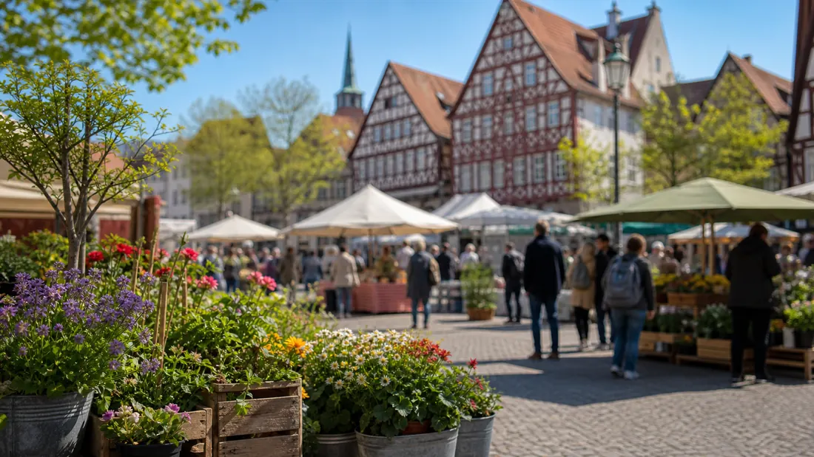

Tagesarchiv
53 regionale Meldungen
Alle Karten öffnen die jeweilige Originalmeldung.

Hessen Aktuell
Regionale Meldungen dieses Tages, gesammelt aus den aktiven Quellen und nach Stadt sowie Thema lesbar.
Tagesarchiv
Alle Karten öffnen die jeweilige Originalmeldung.
Meldungen
Kassel · Veranstaltungen
Die Stadtteil- und Schulbibliothek Waldau besteht seit einem halben Jahrhundert und lädt Anfang November zu einem Jubiläumsprogramm ein. Der Eintritt zu allen Veranstaltungen ist frei.

Kassel · Politik
Wie sieht die Wärmeversorgung der Zukunft in der Stadt Kassel aus? In welchen Bereichen der Stadt eignen sich Wärmenetze oder individuelle Heizungslösungen besonders für die Wärmeversorgung? Darauf gibt die kommunale Wärmeplanung Antworten. Und jetzt auch vor Ort: Los geht es am 29. Oktober in Harleshausen.

Kassel · Verkehr
Nach einer intensiven Planungsphase können nun die Bauarbeiten für die Neugestaltung der Spielplätze in der Tischbeinstraße und in der Buddengasse beginnen. Damit entstehen im Wehlheider Ortskern neue, attraktive Freiräume für Kinder und Jugendliche.

Kassel · Politik

Kassel · Politik
Landkreis Kassel investiert rund 17,4 Mio Euro Weitere Details, Hintergründe und vollständige Angaben stehen in der verlinkten Originalmeldung.

Kassel · Verkehr
Halbseitige Sperrung der L 3211 bei Laar ab 20. Oktober Weitere Details, Hintergründe und vollständige Angaben stehen in der verlinkten Originalmeldung.

Kassel · Politik
Landkreis und Stadt besiegeln Grundstücksübertragung für Erweiterungsbau Weitere Details, Hintergründe und vollständige Angaben stehen in der verlinkten Originalmeldung.

Kassel · Veranstaltungen
Landkreis Kassel organisiert gemeinsam mit AGiL verlässliches Ferienangebot für Grundschulkinder Weitere Details, Hintergründe und vollständige Angaben stehen in der verlinkten Originalmeldung.

Kassel · Polizei
In dem Ermittlungskomplex wegen besonders schweren Fällen von Erpressungen und Brandstiftungen ermitteln die Kasseler Staatsanwaltschaft und die eigens eingerichtete AG Bistro weiterhin mit Hochdruck.

Kassel · Polizei
Am 16.09.2026 gab es die nordhessische Premiere zum Format „Musik trifft Prävention“ in Bad Arolsen. Knapp 300 Bürgerinnen und Bürger waren der Einladung der Stadt Bad Arolsen gefolgt.

Kassel · Polizei
Großer Andrang, viele tolle Gespräche und starkes Interesse an den verschiedenen Berufen der Einsatzkräfte: Darauf kann die Blaulichtfamilie nach der Veranstaltung in Kassel zurückblicken.

Kassel · Polizei
Die Kasseler Polizei und die Staatsanwaltschaft Kassel ermitteln aktuell in drei mutmaßlichen Erpressungsfällen, bei denen eine Tätergruppe von verschiedenen Geschäftsinhabern Geldsummen forderten.
Kassel · Polizei
Im Rahmen der Aktion "Blitz for Kids" hat die nordhessische Polizei zusammen mit Schülerinnen und Schülern Geschwindigkeitskontrollen im Umfeld von Schulen und Kitas durchgeführt.
Frankfurt · Polizei
Frankfurt (ots) - (rü) Die seit Freitagabend gegen 19:00 Uhr (16. Oktober 2026) vermisste 13-jährige Medina K. aus Frankfurt Niederrad wurde wohlbehalten angetroffen. Die Vermisstenmeldung wird hiermit zurückgenommen. Rückfragen bitte an: ...

Frankfurt · Verkehr
Frankfurt (ots) - (ha) Seit Freitagabend gegen 19:00 Uhr (16. Oktober 2026) wird die 13-jährige Medina K. aus Frankfurt Niederrad vermisst. Letztmalig wurde sie am Freitagabend an der Bushaltestelle Schweinfurter Weg in Frankfurt Sachsenhausen ...
Frankfurt · Polizei
Frankfurt (ots) - (ha) Die Fahndung nach dem 70-jährigen Uwe K. wird hiermit zurückgenommen, er konnte wohlbehalten angetroffen werden. Rückfragen bitte an: Polizeipräsidium Frankfurt am Main Pressestelle Adickesallee 70 60322 Frankfurt am Main ...
Frankfurt · Polizei
Frankfurt (ots) - (di) Gestern Mittag (21. Oktober 2026) fielen zwei Männer auf der Zeil durch mutmaßlich volksverhetzende Äußerungen auf. Die Polizei sucht nun Zeugen. Ein Passant informierte gegen 14:35 Uhr das örtlich zuständige ...
Frankfurt · Polizei
Frankfurt (ots) - (di) Gestern erfolgte in den frühen Morgenstunden (21. Oktober 2026) die Festnahme eines Mannes, der im Verdacht steht, im Ostend einen Einbruch in ein Firmengebäude begangen zu haben. Der Sicherheitsdienst eines ...

Frankfurt · Verkehr
Andere Linien als Alternativen verstärkt, Busse als Ersatz Weitere Details, Hintergründe und vollständige Angaben stehen in der verlinkten Originalmeldung.
Frankfurt · Verkehr
Geänderte Linienwege am Samstag zwischen 8 und 16 Uhr Weitere Details, Hintergründe und vollständige Angaben stehen in der verlinkten Originalmeldung.
Frankfurt · Verkehr
Busse fahren am 24. Oktober als Alternative Weitere Details, Hintergründe und vollständige Angaben stehen in der verlinkten Originalmeldung.
Frankfurt · Verkehr
Linie auf Strecke Heerstraße – Eissporthalle reduziert, U4 bindet Enkheim an Weitere Details, Hintergründe und vollständige Angaben stehen in der verlinkten Originalmeldung.
Frankfurt · Verkehr
Aufgrund von Gleis- und Weichenbauarbeiten fahren die Straßenbahnlinien 12, 15, 17, 18 und 21 auf geänderten Routen. Weitere Details, Hintergründe und vollständige Angaben stehen in der verlinkten Originalmeldung.
Frankfurt · Verkehr
Die Mainova AG beginnt am Montag, 26. Oktober 2026, mit vorbereitenden Maßnahmen für den künftigen Fernwärmeanschluss des Frankfurter Zoos.
Frankfurt · Wirtschaft
Mainova bestätigt hohe Leistungsfähigkeit Weitere Details, Hintergründe und vollständige Angaben stehen in der verlinkten Originalmeldung.
Frankfurt · Verkehr
Die Preise für Fernwärme im Tarif Wärme Classic steigen turnusgemäß zum 1. Oktober 2026 leicht an. Das wirkt sich je nach Verbrauch und angeschlossener Leistung unterschiedlich aus. Grundlage hierfür sind die vertraglich festgelegten Preisformeln.
Wiesbaden · Politik
Das Jugendparlament kommt am Dienstag, 27. Oktober, um 17 Uhr im Rathaus, Schlossplatz 6, in Raum 22, zu seiner nächsten öffentlichen Sitzung zusammen.
Wiesbaden · Politik
Im aktuellen Smart City Index 2026 des Digitalverbands Bitkom verbessert sich die Landeshauptstadt in der Kategorie „Verwaltung“ um sieben Plätze und erreicht bundesweit Rang 13. Mit 91,1 von 100 möglichen Punkten gehört Wiesbaden damit zu den 15 bestplatzierten deutschen Großstädten in diesem Bereich.
Wiesbaden · Verkehr
Die Fahrbahnsanierung der Dotzheimer Straße ist abgeschlossen. Verkehrsdezernent Marc Dahlen hat die Straße am Donnerstag, 22. Oktober, wieder für den Verkehr freigegeben. Die Arbeiten konnten bereits nach sechseinhalb Wochen beendet werden – anderthalb Wochen früher als ursprünglich geplant.
Wiesbaden · Verkehr
Selbst gemalte Parkplätze, private Sperrflächen oder ein Zebrastreifen mitten im Kreisverkehr: Rund 170 nicht genehmigte Markierungen hat die Stadt Wiesbaden auf öffentlichen Straßen und Gehwegen erfasst. Die Markierungen sollen innerhalb der nächsten sechs Monate beseitigt werden. Beim Pressetermin am Donnerstag.
Wiesbaden · Polizei
Die Willy-Brandt-Allee im Europaviertel ist wieder für den Durchgangsverkehr gesperrt. Es dürfen nur noch Linienbusse, Taxis und Radfahrerinnen und Radfahrer die Straße passieren. Die Stadtpolizei wird die Einhaltung des Durchfahrtverbots verstärkt kontrollieren.
Wiesbaden · Polizei
Wiesbaden (ots) - 1. Wohnungseinbruch, Wiesbaden, Daimlerstraße, Mittwoch, 21.10.2026, 12.05 Uhr bis 12.40 Uhr (wo)Am Mittwochmittag kam es zu einem Einbruch in eine Wohnung in Wiesbaden. Zwischen 12.05 Uhr und 12.40 Uhr verschafften sich ...
Wiesbaden · Polizei
Wiesbaden (ots) - Das Bundeskriminalamt (BKA) veranstaltet am 11. und 12. November 2026 seine jährliche Herbsttagung unter dem Titel "Neue Bedrohungen, neue Strategien - ein Paradigmenwechsel?". Wir laden Sie ein, sich ab sofort für die ...
Wiesbaden · Polizei
Wiesbaden (ots) - Polizeigewerkschaft warnt vor französischen Zuständen. Mit Blick auf die Krawalle und Ausschreitungen der letzten Tage in Frankreich warnt die Deutsche Polizeigewerkschaft (DPolG) Hessen davor, dass einige extremistische Gruppen ...
Wiesbaden · Polizei
Wiesbaden (ots) - 1. Hochwertige Fahrzeuge gestohlen, Wiesbaden, OT Naurod und OT Nordost, Montag, 19.10.2026, 19.30 Uhr, bis Dienstag, 20.10.2026, 10.50 Uhr (wo)Von Montag auf Dienstag entwendeten unbekannte Täter in Wiesbaden zwei hochwertige ...
Wiesbaden · Verkehr
Wiesbaden (ots) - Rücknahme der Vermisstenfahndung nach 43-Jähriger aus Wiesbaden, Wiesbaden, Wiesbadener Landstraße, Mittwoch, 21.10.2026, 10.30 Uhr (wo) Die am 19.10.2026 gegen 12.00 Uhr veröffentliche Vermisstenfahndung nach einer ...
Darmstadt · Politik
Abschluss der Umbauarbeiten in der Watvogelhalle im Zoo Vivarium Weitere Details, Hintergründe und vollständige Angaben stehen in der verlinkten Originalmeldung.
Darmstadt · Politik
Zwei Online-Anwendungen der Wissenschaftsstadt Darmstadt vorübergehend nicht erreichbar Weitere Details, Hintergründe und vollständige Angaben stehen in der verlinkten Originalmeldung.
Darmstadt · Verkehr
Darmstadt (ots) - Zwischen Dienstagabend (20.10.), 19.45 Uhr, und Mittwochvormittag (21.10.), 11.30 Uhr, haben Kriminelle einen Hyundai "Santa Fe" entwendet. Das Fahrzeug mit dem amtlichen Kennzeichen DA-RM 308 war am Fahrbahnrand der Heidelberger ...
Darmstadt · Verkehr
Darmstadt/ Frankfurt am Main / Rodgau (ots) - Rund 1,3 Millionen unversteuerte Zigaretten stellten Ermittlerinnen und Ermittler des Zollfahndungsamts Frankfurt am Main und der Hauptzollämter Darmstadt und Dresden bei Fahrzeugkontrollen am Abend des ...
Darmstadt · Verkehr
Darmstadt (ots) - Bislang unbekannte Täter nahmen am Dienstagmorgen (20.10.) gegen 5.45 Uhr eine Baustelle in der Landwehrstraße ins Visier. Nach derzeitigen Erkenntnissen betraten die Unbekannten die Baustelle, erbeuteten über 1.000 Meter Kabel ...
Darmstadt · Polizei
Darmstadt (ots) - Polizeikräfte haben am 16. Oktober im Herrngarten ein schwarzes Mountainbike sichergestellt und suchen jetzt die rechtmäßigen Eigentümer. Das Rad der Marke Zündapp, Modell Z801, wurde gegen 8.30 Uhr herrenlos und ...
Darmstadt · Polizei
Darmstadt (ots) - Nachdem sich ein 82-jähriger Tatverdächtiger am Montagvormittag (19.10.) in der Klappacher Straße, im Bereich eines Waldkunstpfades, vor einer Frau und zwei minderjähriger Kinder entblößte, konnte er im Rahmen einer ...
Hessen · Verkehr
In Hessen startet Radio- und Social-Media-Kampagne nach der Zeitumstellung. Weitere Details, Hintergründe und vollständige Angaben stehen in der verlinkten Originalmeldung.
Hessen · Verkehr
ERSTE JAHRESKONFERENZ BRINGT WIRTSCHAFTSFÖRDERER AUS GANZ HESSEN ZUSAMMEN. Weitere Details, Hintergründe und vollständige Angaben stehen in der verlinkten Originalmeldung.
Hessen · Verkehr
Verkehrsministerkonferenz: Reform der Trassenpreise und schnellere Infrastrukturprojekte. Weitere Details, Hintergründe und vollständige Angaben stehen in der verlinkten Originalmeldung.
Hessen · Verkehr
Wirtschaftsminister Kaweh Mansoori berät mit Betriebsräten und Gewerkschaften. Weitere Details, Hintergründe und vollständige Angaben stehen in der verlinkten Originalmeldung.
Hessen · Verkehr
Das Land Hessen fördert den Neubau der Eisenbahnüberführung in Bensheim mit 957.000 Euro und sorgt so für mehr Sicherheit und Platz für alle Verkehrsteilnehmer.
Hessen · Verkehr
Die Verkehrsministerinnen und Verkehrsminister der Länder haben über die Finanzierung der Verkehrsinfrastruktur, steigende Trassenpreise und den Erhalt des Verkehrsangebots beraten.
Hessen · Politik
„Der Bund muss jetzt die rechtlichen Voraussetzungen schaffen, damit wir die Bevölkerung schnell und effektiv vor Gefährdern schützen können“, so Ministerpräsident Rhein.
Hessen · Politik
Dafür sollen die Wirtschaftsförderer auf regionaler, kommunaler und Landesebene künftig enger zusammenarbeiten. Weitere Details, Hintergründe und vollständige Angaben stehen in der verlinkten Originalmeldung.
Hessen · Politik
Wirtschaftsminister Kaweh Mansoori berät sich mit Betriebsräten und Gewerkschaften. Weitere Details, Hintergründe und vollständige Angaben stehen in der verlinkten Originalmeldung.
Hessen · Politik
Landesregierung vernetzt internationale Organisationen, öffentliche Institutionen, Forscher und Unternehmer: „Wir müssen die eigenen Fähigkeiten im All stärken."